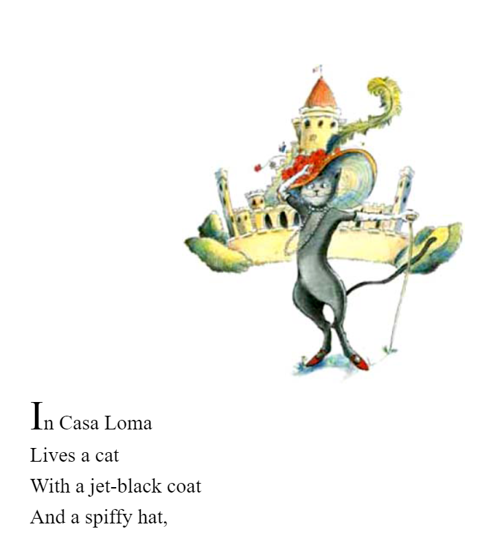

Leaflet web map and scrollstory experiment by Drs. Claus Rinner and Ann Marie Murnaghan and collaborators, mapping select locations from children's books (image permissions to be confirmed).
1. Covello, Paul. Toronto ABC. Harper Collins, 2014
(credit Emily Smith)Summary: Paul Covello’s Toronto ABC takes very young readers on a tour of Toronto’s most notable attractions and neighborhoods. The alphabet guides the exploration of places such as the AGO, Distillery District, Lake Ontario, Kensington Market and more.
Location Features: AGO, Casa Loma, Distillery District, Eaton Centre, Fort York, Allan Gardens, the Junction, Kensington Market, Nathan Phlips Square, Old City Hall, Pearson International Airport, Queen’s Park, Royal Ontario Museum, CN Tower, Waterfront, The Ex, Yonge and Dundas Square
2. Fine, Esther Sokolov. I'm A Child of the City. Kids Can Press, 1973
(credit Quentin Stuckey)Summary: A rare children's text from the Osborne Collection of Early Children's Books, writer/educator Esther Sokolov Fine captures the subtle pleasures of city life from the perspective of a young girl. Her simple ink illustrations portray the delight in waiting for the streetcar, visiting the Royal Ontario Museum, yelling to friends on a busy street and even sitting on the curb, as if distilling leisurely joy/appreciation from city activities that we often regard as too hectic or mundane. The young girl couldn't imagine being anything other than "a child of the city."
Location Features: Royal Ontario Museum

3. Lee, Dennis. The Cat and the Wizard. Illustrated by Gillian Johnson, Harper Collins, 2001
(credit Emily Smith)Summary: This story follows two lonely characters, a cat and a wizard. After a chance encounter in a laundromat, the homeless wizard and black cat share a wonderful evening in Casa Loma. They eat a delicious tuna dinner and the wizard puts on a magic show.
Location Features: Casa Loma

4. Munsch, Robert. Jonathan Cleaned Up – Then He Heard a Sound. Illustrated by Michael Martchenko, Annick Press, 1981
(credit Emily Smith)Summary: Just as Jonathan finishes tidying up his home, he hears a noise behind the wall. A train comes through his apartment and makes an unexpected stop in his living room, ruining all his cleaning efforts. The train conductor tells Jonathan that he should go to City Hall if he has a problem with the train stopping in his home. There he meets with the mayor and the man behind the computers which control the subway system. Michael Marchenko illustrates scenes of Toronto, including the exterior and interior of City Hall and TTC streetcars.
Location Features: Old City Hall
5. Viva, Frank. Young Frank, Architect. Harry N. Abrams, 2013
(credit Quentin Stuckey)Summary: Part of a series of picture books focusing on precocious young people, Frank Viva’s Young Frank, Architect is a delightful story concerning Frank’s passion for building and designing everywhere he goes. He builds models utilizing household articles including popsicle sticks, books and paper, prompting his father to encourage his love of building design by showing him the city skyscrapers. Viva’s illustrated depiction of New York City is reminiscent of 1950’s-1960’s sharp, detailed city life, complete with suits, ties and hats.
Location Features: Museum of Modern Art, New York City

6. Levine, Rhoda. Arthur. Illustrated by Everett Aison, New York Review Books, 1962
(credit Quentin Stuckey)Summary: In this vintage picture book, written by Rhoda Levine and illustrated by Everett Aison, a bird named Arthur is so immersed in the scenes of New York City that his fellow bird companions leave him behind as they fly south for the incoming winter. Arthur must fend for himself: taking shelter on a statue, being fed bread crumbs in the park and observing the changes in season based on the attire of New York city dwellers. Arthur succeeds in taking care of himself with the other birds returning and being shocked by his preservation. Aison’s illustrations are minimalist and crudely drawn, leaving plenty of white space which literally gives Arthur more space to roam around the page.
Location Features: Rockefeller Center, New York City